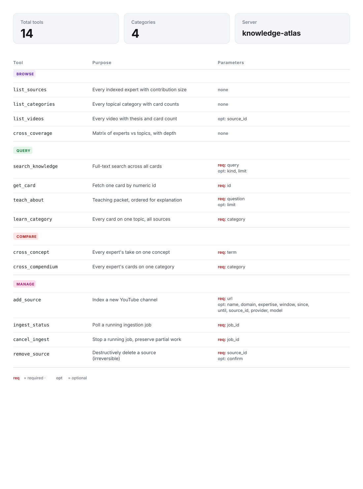

Reference architecture
How Knowledge Atlas is designed: data flow, components, APIs, MCP, schema, extensibility, security.
Design principles
- SQLite is the single source of truth. Everything else is a view or a service.
- Source is a first-class dimension. Every artifact carries a
source_id. The whole API filters, groups, or correlates by it. - Schema is the contract. Any LLM producing knowledge cards must conform to
data/knowledge/SCHEMA.md. Swap providers freely. - Two surfaces, one backend. Human dashboard and AI agents read the same SQLite via parallel HTTP routes. MCP gives local AIs direct access without HTTP.
- Idempotent rebuild.
build_knowledge.pyalways rebuilds from on-disk JSON. Re-running is safe. - Localhost-only by default. No cloud, no telemetry, no remote auth. Trust boundary is the machine.
- No metrics. The deliverable is paraphrased knowledge a human can absorb in seconds, not statistics about the corpus.
System overview
Card schema — the contract
Every JSON file in data/knowledge/ must conform to this:
{
"video_id": "string",
"video_title": "string",
"video_url": "https://www.youtube.com/watch?v=...",
"one_line": "single-sentence core thesis (≤ 25 words)",
"best_for": "watch this if you... (one sentence)",
"categories": ["topical tags"],
"cards": [
{
"kind": "principle | tactic | warning | framework | mental_model | phrase | quote",
"category": "topical category",
"title": "5-10 word title",
"content": "1-3 clean sentences — the knowledge itself, paraphrased",
"reasoning": "optional: why it works",
"source_quote": "optional: ≤30-word anchor quote",
"framework_steps": ["only when kind=framework"]
}
]
}See SCHEMA.md for the full extraction rules.
SQLite data model
sources, videos, cards) plus a framework-step child table and an FTS5 virtual table for full-text search.HTTP API
/api/* — human dashboard
| Endpoint | Purpose |
|---|---|
GET /api/source | source overview |
GET /api/kinds | card-kind counts |
GET /api/categories | topical categories |
GET /api/cards?kind=&category=&video= | filterable cards |
GET /api/card/<id> | one card |
GET /api/videos | all videos |
GET /api/video/<vid> | video + its cards |
GET /api/search?q= | FTS5 search |
POST /api/ingest | self-serve onboarding |
GET /api/ingest/status/<job_id> | live job status |
/ai/* — autonomous agent surface
Every response returns the video_url for citation.
| Endpoint | Purpose |
|---|---|
GET /ai/manifest | discovery doc |
GET /ai/sources | indexed experts with size |
GET /ai/categories | topic taxonomy |
GET /ai/cards | filterable card stream |
GET /ai/search?q=&include=... | OR-matched FTS |
GET /ai/atlas | full atlas grouped by category |
GET /ai/learn/<category> | study packet, kind-ordered |
GET /ai/teach?q=<question> | question → teaching packet |
/ai/cross/* — multi-source correlation
| Endpoint | Purpose |
|---|---|
GET /ai/cross/coverage | which sources cover which topics |
GET /ai/cross/concept/<term> | every source's take on a concept |
GET /ai/cross/compendium/<category> | every source's cards on a topic |
GET /ai/cross/consensus | cross-source card pairs that match |
MCP integration
The Model Context Protocol server bridges the atlas to AI clients that can't reach localhost HTTP (Claude Desktop sandbox, claude.ai web, etc.). The MCP server bypasses Flask and reads SQLite in-process — it works even when the dashboard isn't running.
Client config
Claude Desktop (~/Library/Application Support/Claude/claude_desktop_config.json):
{
"mcpServers": {
"knowledge-atlas": {
"command": "/absolute/path/to/python3",
"args": ["/absolute/path/to/knowledge-atlas/mcp_server.py"]
}
}
}Claude Code:
claude mcp add knowledge-atlas --scope user -- \
/absolute/path/to/python3 /absolute/path/to/knowledge-atlas/mcp_server.pyTools reference
The MCP server exposes 14 tools across four categories. Tools in the
manage category mutate state (require Flask running so they can call
back to /api/ingest and /api/source); all others
read SQLite directly and work even when the dashboard is offline.

Self-serve ingestion
The dashboard exposes an Index expert modal that fires off the full pipeline as a
background job. The user pastes a URL + API key (saved chmod 600 to .env) and
watches the streaming subprocess log.
Browser Flask /api/ingest Background thread
────── ───────────────── ─────────────────
POST { url, → spawn thread register source
api_key } return job_id → fetch_channel.py (streaming)
→ extract_knowledge.py (streaming)
GET /api/ingest → build_knowledge.py
/status/<id> ← { step, percent, log }
(poll loop) ← { status:done }
reload UILLM provider abstraction
extract_knowledge.py is provider-agnostic by design:
def make_client(provider, api_key):
if provider == "xai":
from openai import OpenAI
return OpenAI(api_key=api_key, base_url="https://api.x.ai/v1")
if provider == "anthropic":
from anthropic import Anthropic
return Anthropic(api_key=api_key)
raise ValueError(f"unknown provider: {provider}")Auto-detection priority: --provider flag → XAI_API_KEY → ANTHROPIC_API_KEY → fail.
Adding a new provider
- Add the SDK to
requirements.txt. - Add a
call_<provider>()function returning the model's text response. - Register the provider in
DEFAULTSandmake_client(). - Add the env var name to
PROVIDER_ENVinapp.py.
Extensibility
| Want to… | How |
|---|---|
| Index a new YouTube channel | python3 add_source.py --id ... --url ... |
| Index a non-YouTube source (podcast RSS, Substack, etc.) | Write a custom fetcher producing sources/<id>/transcripts/<vid>.txt. The rest is source-agnostic. |
| Use a different LLM | Add a call_<provider>() function — see above. |
| Add a new card kind | Extend VALID_KINDS, update SCHEMA.md, add color tokens to the UI. |
| Add a new endpoint | Drop a Flask route in app.py; add a matching MCP tool in mcp_server.py. |
| Expose to a non-localhost AI | Tunnel via cloudflared/ngrok. Add auth first — no built-in auth by design. |
Security & privacy model
| Concern | Mitigation |
|---|---|
| API keys | Local .env only (chmod 600). Never logged. Never sent to the browser. |
| Network exposure | Flask binds 127.0.0.1 only. Nothing on a public interface. |
| Indexed content | Transcripts and cards stay on disk in gitignored directories. |
| Auth | None — localhost trust model. Tunnel out only with added auth. |
| Subprocess hygiene | subprocess.Popen calls never use shell=True. Args passed as lists. |
| MCP exposure | The MCP server reads SQLite read-only. Cannot mutate data. Cannot reach the network. |